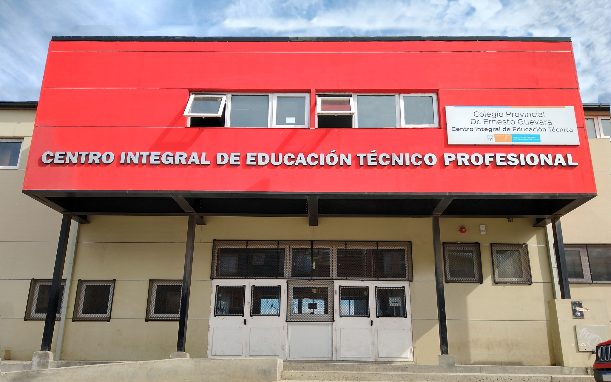

El Colegio Técnico Dr. Ernesto Guevara de Río Grande...

El Colegio Técnico Dr. Ernesto Guevara de Río Grande, fundado con el propósito de ofrecer una educación técnica de calidad, se ha destacado a lo largo de su historia por su compromiso con la formación integral de sus estudiantes. Con una amplia gama de programas y especializaciones, el colegio no solo proporciona conocimientos técnicos avanzados, sino que también fomenta valores de responsabilidad, innovación y trabajo en equipo. Su legado histórico está marcado por la excelencia académica y la constante adaptación a las necesidades del mercado laboral, preparando a sus alumnos para enfrentar con éxito los desafíos del mundo profesional y contribuir al desarrollo de la comunidad.
